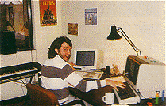

|
Sound is something that's
rarely noticed in today's arcades - with the combined din
of all the machines going at once it's difficult to make
out anything at all.
But even so, Atari takes its
sound every bit as seriously as its graphics and game
designs - and no-one takes it more seriously than Brad
Fuller, Atari's head of audio development and his
three-man team. After studying at the Indiana School of
Music, Brad went on to write advertising jingles before
joining Atari - he's been there for eight years, and has
produced the sonics for (among many others), Marble
Madness, RoadBlasters, Cyberball, Firefox (based on the
Clint Eastwood film), Blasteroids, Escape From The Planet
Of The Robot Monsters and now Klax.

Brad's team comprises three
composers (including himself), who design and create all
the music and sound effects, plus a Design Engineer, whose
job it is to ensure that everything is going to plan and
works from a technical point of view.
As Brad explains, in the world of coin-op development,
sound is anything but an afterthought: "We work very
closely with the Project Leader and his team, and make
sure to keep up to date with the game - we have to make
constant checks, as we never design a particular effect
until we see the visual that it has to come from."
With developments in sound technology constantly on the
move, Brad's always got something new to work with but at
the end of the day he's limited by the technical
constraints of the machine itself: "Currently we use PCs,
with some Yamaha synths for the keyboard effects.
But when we're actually designing and composing a tune for
the first time, we use the old methods. We write it out on
score paper and play it on piano before taking it to the
computer."
Effects-wise, Brad's team has a large ready-made sound
library stored on CD, where the majority of the SFX come
from: "We have plenty of gunshots and explosions, and we
play around with these to get the desired effect." But
it's not always that simple, as Brad often has to get his
effects from other - sometimes unlikely - sources: "The
klick-klack
sound of the tiles in Klax was created by playing around
with the sounds of people's voices, and also from musical
wood blocks. The scream that occurs when a tile tails into
the abyss is actually Mark Pierce's."
"It's tricky - at first you may have a sound that won't
fit, but you can play with it and after a while it works.
You can't just look at your sound library and say 'which
of these effects sounds like a tile' - and anyway, what
does a tile sound like?"
For the purposes of speech, no expense is spared, with
Atari hiring professional 'talents' to come in and recite
a script that has been produced in the style that the team
requires. Once it's recorded, it's played around
with like any other effect until it's perfect.
Brad's views an arcade game's sound as one of its most
important aspects - he claims it's as least as important
as the sound in a film. And he's proud of what he
produces: "I don't want to sound pompous, but I think
Atari produces the best coin-op sound. The sound produced
by other manufacturers is like pop music, but with us
we're creating something more atmospheric. My goal is to
produce sound that heightens the overall experience, and
to increase the enjoyment value of a game."
Surprisingly, Brad is also quite concerned about coin-op
sound - or at least the amount of it: "In the arcades over
here, the owners like to turn all the volumes up real
loud, to get people interested, but with all the machines
going it gets just too loud. I recently measured the level
of sound in a few arcades, and it was actually reaching
levels that can be harmful to the ear. With Firefox, we
included a jack socket that people could plug their
headphones into, but that's actually worse, as the kids
just turn the volume right up."
As for the future of sound, Brad foresees what he calls 3D
sound making an appearance. "Sound effects will be
positioned, so that when something happens on-screen,
you'll be able to localise the sound effect to that point
- it's all done with the positioning of the speakers," he
muses. "I think that as technology increases we'll be
hearing sound that sounds more like real instruments. The
whole experience will be much more film-like."
|